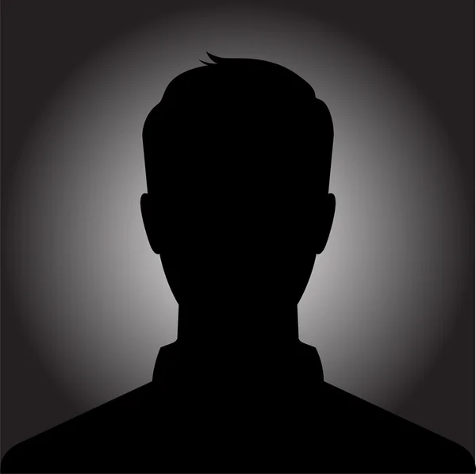

PLAYER PROFILE
ALONE
Khronos E-Sports • Suporte

ALONE SUPORTE
FACEIT Rating: 1.00
Localização pública: Rio Grande do Sul, Brasil
Steam Level: 43
CONFIGURAÇÕES CS2
ESPAÇO RESERVADOSensibilidade, DPI, resolução, crosshair e demais configurações ainda não informadas.
PERIFÉRICOS
ESPAÇO RESERVADOMouse, teclado, headset, monitor e outros equipamentos ainda não informados.
PERFIL COMPETITIVO
FACEITPerfil público vinculado a Abskani. Rating informado: 1.00.